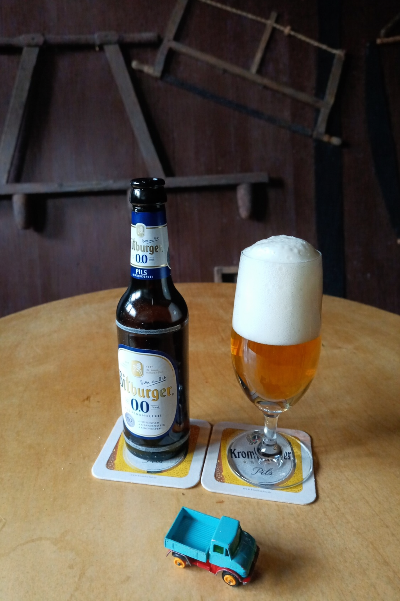

Unser Stammtisch findet in der Gaststätte Urban statt:
Hasberger Straße 13, 49504 Lotte.
Die Betreiber sind bodenständig, herzlich und absolut unkompliziert – genau die richtige Umgebung für gute Gespräche über Technik, Treffen und natürlich den Unimog.
Die Speisekarte ist bewusst minimalistisch gehalten und bietet vor allem klassische Gerichte wie Pommes und Schnitzel.
Bitte beachten: In der Gaststätte Urban ist nur Barzahlung möglich.
Zusätzlich wichtig: Es steht kein WLAN zur Verfügung.
Hinweis: Der Stammtisch am 09.04.2027 findet nicht im Urban statt. Die alternative Gaststätte wird noch bekannt gegeben.
Unser Stammtisch findet an jedem zweiten Freitag eines Quartals statt – jeweils ab 19:30 Uhr.
| Quartal | Datum | Uhrzeit |
|---|---|---|
| Q4/2026 | 09.10.2026 | 19:30 Uhr |
| Q1/2027 | 08.01.2027 | 19:30 Uhr |
| Q2/2027 |
09.04.2027 Nicht im Urban – neuer Treffpunkt folgt |
19:30 Uhr |
| Q3/2027 | 09.07.2027 | 19:30 Uhr |
| Q4/2027 | 15.10.2027 | 19:30 Uhr |
| Q1/2028 | 14.01.2028 | 19:30 Uhr |
| Q2/2028 | 14.04.2028 | 19:30 Uhr |
| Q3/2028 | 14.07.2028 | 19:30 Uhr |
| Q4/2028 | 13.10.2028 | 19:30 Uhr |